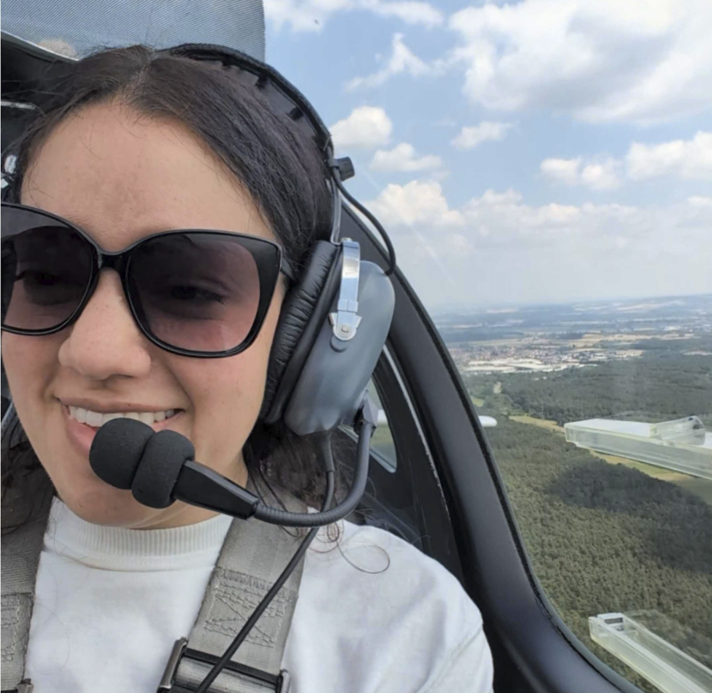
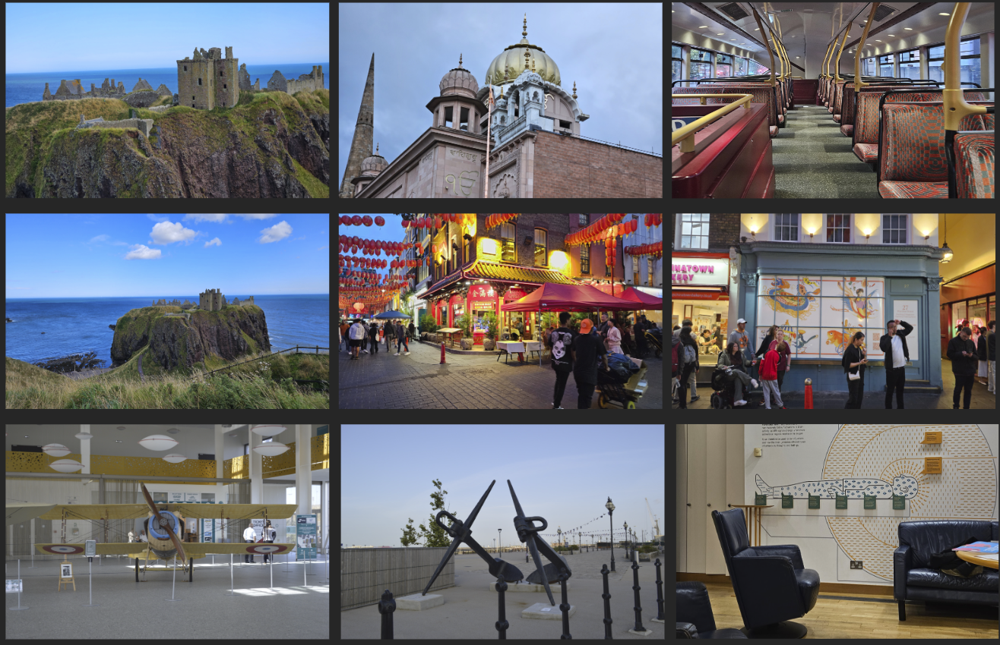
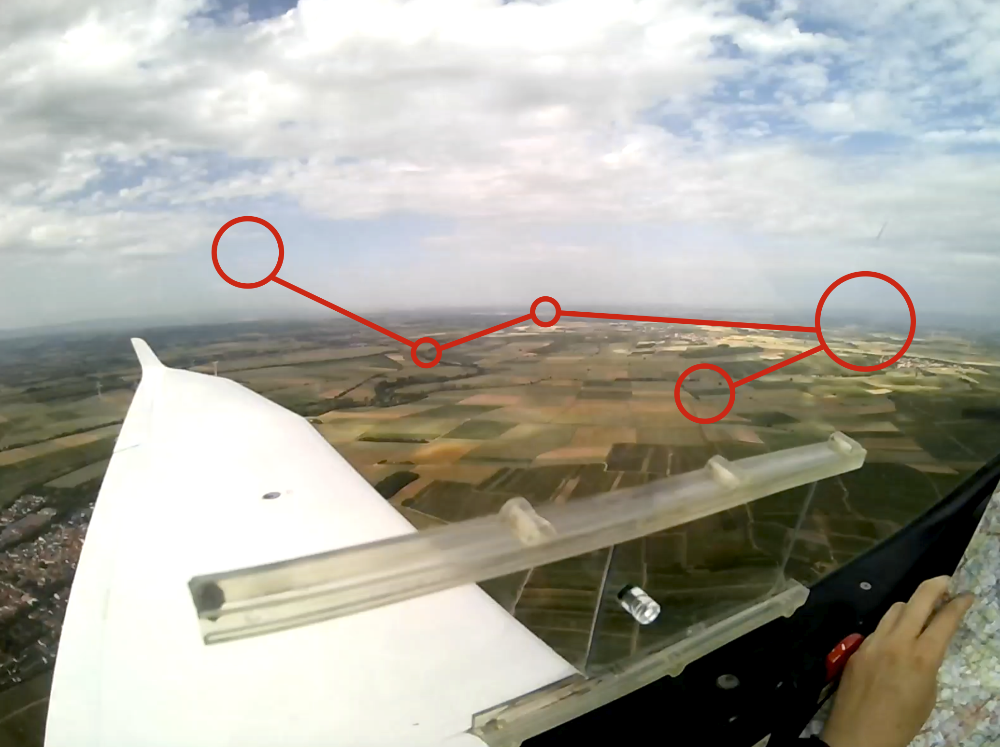
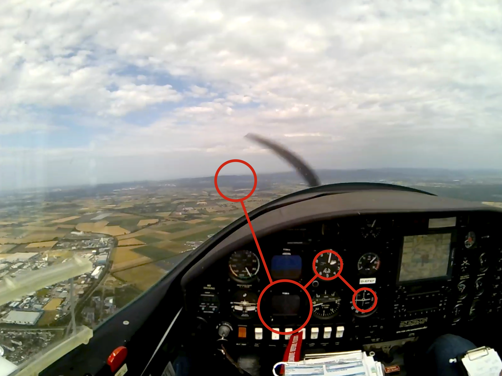
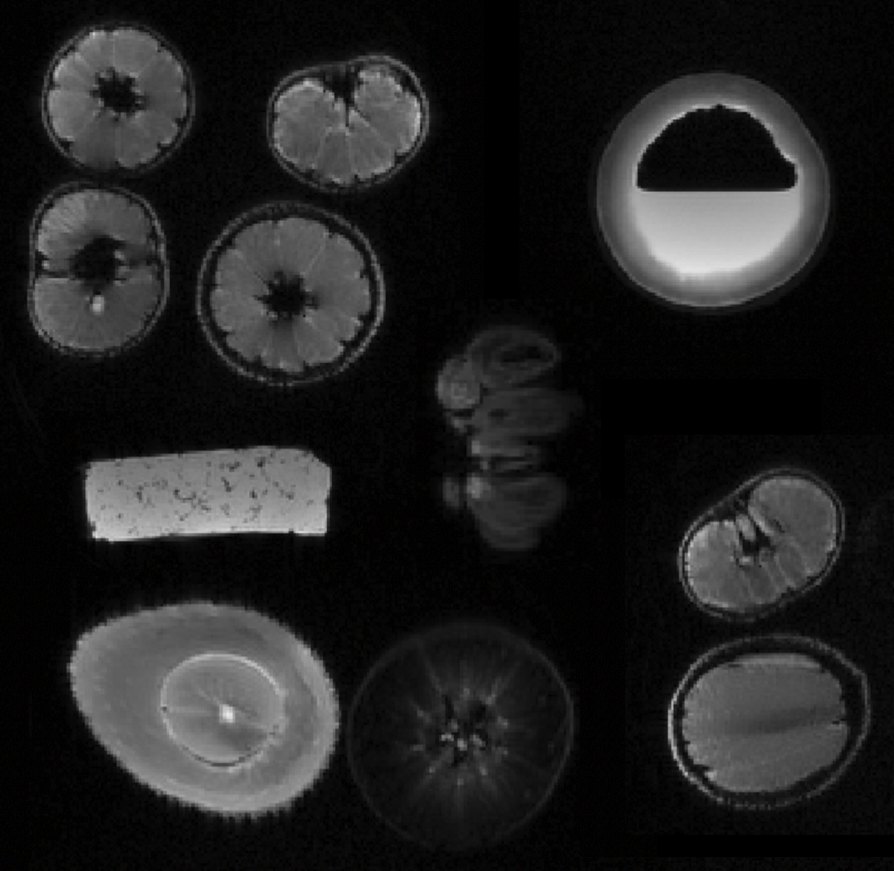
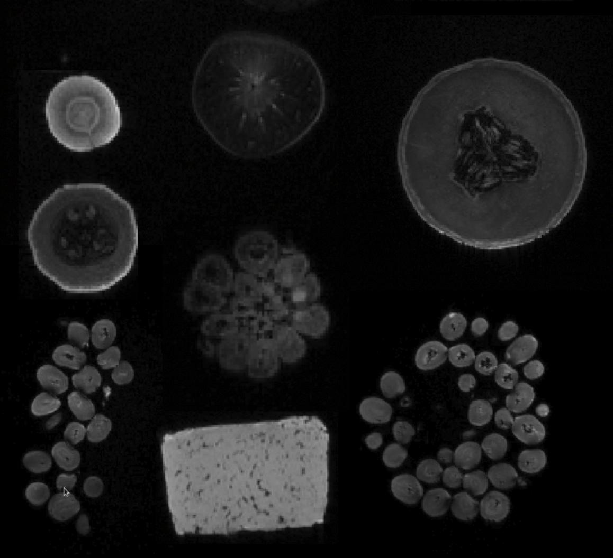

Visual Working Memory
How are visual memories represented in early visual cortex?
→Vision · Memory · Spatiotemporal Prediction

I am a cognitive neuroscientist fascinated by one simple question: How does the brain allow us to perceive and interact with a world that never holds still?
Curiously, neuroscience was not where my journey began. As an undergraduate, I spent three years studying aerospace engineering before attending a lecture on disorders of the central nervous system that completely changed the course of my career. I left the room convinced that nothing is really more intricate, elegant, and mysterious than our own brains. From that moment on, I wanted to understand not only how our brain works, but why it works the way it does.
During my PhD, at the Ernst Strüngmann Institute of the Max Planck Society, under the supervision of Dr. Rosanne Rademaker, I had the chance to explore some exciting research topics. My research investigates how the brain predicts the future states of moving objects, how visual information held in memory is shaped by task demands, and which neural mechanisms allow us to perceive a dynamic world despite incomplete sensory input. To answer these questions, I combine psychophysics, eye tracking, fMRI, and computational modeling.
More than anything, I am a curious person. Whether I am in the lab, learning how to fly a plane, scuba diving, sketching or picking up an entirely new hobby, I'm driven by the same question: How does our brain allow us to do so many cool and complex tasks?
Scroll to exploreWhat do a tennis player and a hunting falcon have in common? Both must anticipate where a moving target will be in the near future. A tennis player does not swing where the ball is, but where it will be. A hunting falcon does not chase where its prey was a moment ago, but where it expects the prey to move next.
Whether it is a tennis ball or fleeing prey, successfully intercepting a moving target depends on predicting where it will be. Yet our visual experience is far from continuous: objects disappear behind obstacles, we blink, and our attention is occasionally diverted, interrupting the flow of visual information reaching our eyes. Despite these interruptions, the brain seamlessly integrates previously acquired information with internal models of how the enviorment changes over time, allowing us to perceive, predict, and act with remarkable precision.
My research investigates how the brain generates predictions from incomplete visual information, and how these mental representations are shaped by behavioral goals and task demands.
How are visual memories represented in early visual cortex?
→How does the brain keep track of moving objects when they disappear behind occluders?
→Using neural networks to understand visual prediction and temporal representations.
→Bringing neuroscience into the real world through exploratory side projects.
→Serriere, L., Argiris, G., Gomes, G., Giorjiani, G. M., Fredrik, B., Walbrin, J., & Almeida, J. (2026). Grasping at the organisation of object knowledge: testing different object-related dimensions as organisational principles of ventral temporal cortex. bioRxiv. Under review. Preprint
Giorjiani, G. M., Rawal, A., & Rademaker, R. L. (2025). Better performance when recalling speed from high-level compared to low-level motion. PsyArXiv. Accepted for publication in Journal of Vision Preprint
Giorjiani, G. M., Tal, Z., Nili, H., Yanchao, B., Fang, F., & Almeida, J. (2022). The way of the light: how visual information reaches the auditory cortex in congenitally deaf adults. bioRxiv. Preprint
Giorjiani, G. M., & Rademaker, R. L. (In prep.) Recall requirements drastically modulate working memory representations in human visual cortex.
Giorjiani, G. M., Alo, N., & Rademaker, R. L. (In prep.) Occluded motion is continuously and automatically tracked in human visual cortex.
Giorjiani, G. M., & Rademaker, R. L. (In prep.) Human predictions of a target moving under occlusion are best explained by visual system recurrency.
Giorjiani, G. M., Biazoli Jr., C. E., & Caetano, M. S. (2021) Differences in perceived durations between plausible biological and non-biological stimuli. Experimental Brain Research, 239, 161–173. DOI
Petraconi, N., Giorjiani, G. M., Saad, A. G. F., Scardovelli, A. T., Silva, S. G., & Balardin, J. B. (2019) Using a Dance Mat to Assess Inhibitory Control of Foot in Young Children. Frontiers in Physiology, 10. DOI
Santaella, D. F., Balardin, J. B., Afonso, R. F., Giorjiani, G. M., Sato, J. R., Lacerda, S. S., Amaro Jr., E., Lazar, S., & Kozasa, E. H. (2019) Greater anteroposterior default mode network functional connectivity in long-term elderly yoga practitioners. Frontiers in Aging Neuroscience. DOI
Nepomoceno, E. B., Giorjiani, G. M., Reyes, M. B., & Caetano, M. De olho no relógio: como percebemos a passagem do tempo? In R. R. Baradel, E. P. Neves, & M. T. Carthery-Goulart (Eds.), (2016) CuriosaMente (Vol. 1, pp. 47–65). Editora UFABC. Book page
Featured Talk
Vision Science Society, VSS 2025 · St. Petersburg, Florida, USA · Conference talk
ESI – Max Planck Institute retreat, Ringberg, Germany
Institute retreatDistributed Cognition & Memory Lab, Humboldt-Universität zu Berlin, Berlin, Germany
Lab visitECVP 2024, Aberdeen, Scotland
Conference talkUniversity College London, London, United Kingdom
Lab visitSpace Lab, New York University, New York, United States
Lab visitVision Science Society, VSS 2025, St. Petersburg, Florida, USA
Conference talk Video →TeaP 2025, Goethe University, Frankfurt, Germany
Conference talkPuG 2026, Heidelberg University, Heidelberg, Germany
Conference talkUniversidade Federal do ABC, São Paulo, Brazil
PosterUniversidade Federal do ABC, São Paulo, Brazil
PosterLisboa, Portugal
Poster Abstract →Vision Science Society, VSS 2023, St. Pete Beach, Florida, USA
Poster Abstract →Egmond aan Zee, Netherlands
Poster Abstract →Vision Science Society, VSS 2024, St. Petersburg, Florida, USA
Poster Abstract →A collection of side projects exploring vision science outside the traditional laboratory settings: from natural image datasets, to cockpit eye tracking, to playful MRI demonstrations.

Field Note 01
Together with Amit Rawal, I was awarded the Tom Troscianko Grant to attend ECVP 2024, where we created an image dataset from landscapes photographed across Belgium, France, England, and Scotland.
Together with Naveen Balachandran, the dataset has been curated and preprocessed, and will shortly be made publicly available for the vision science community.


Field Note 02
While learning how to fly, I recorded my own eye movements in the cockpit using wearable eye tracking glasses (featured by Indivisual Lab), capturing my erratic gaze patterns between flight instruments, the outside view, maps, and the runway.


Field Note 03
The hidden internal structures of different fruits and vegetables are revealed through some cool MRI scans.
A downloadable CV will be available here.
Ernst Strüngmann Institute for Neuroscience
Frankfurt am Main, Germany